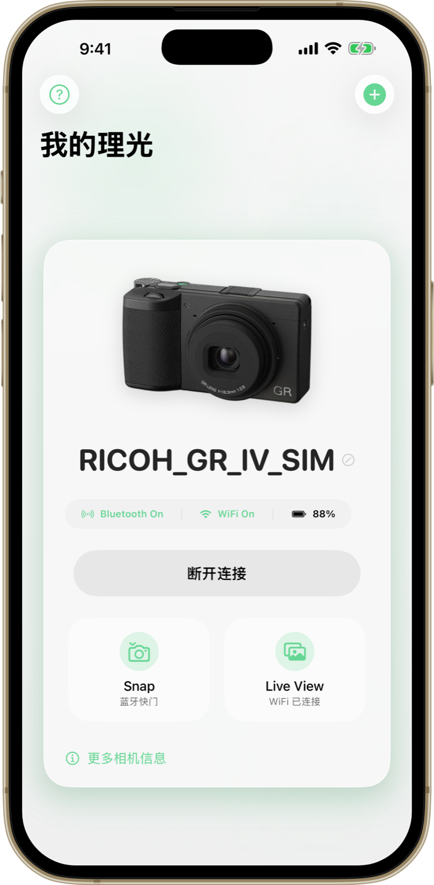
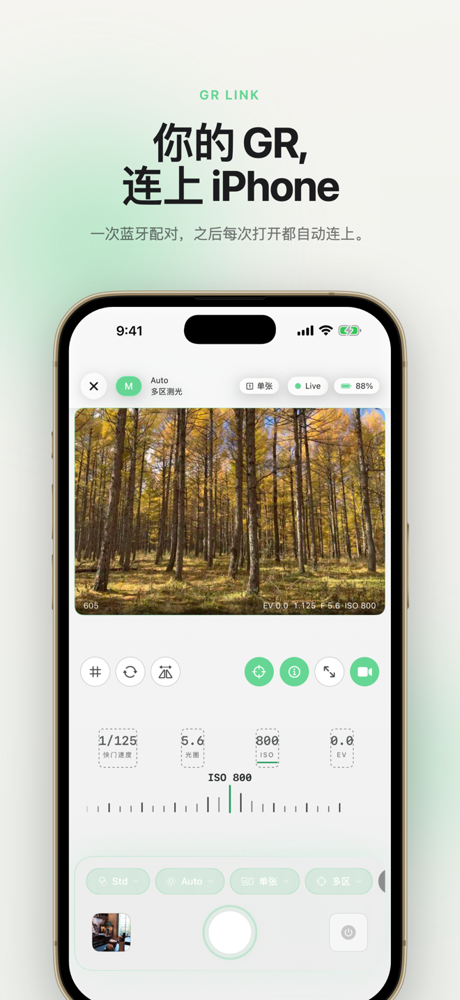
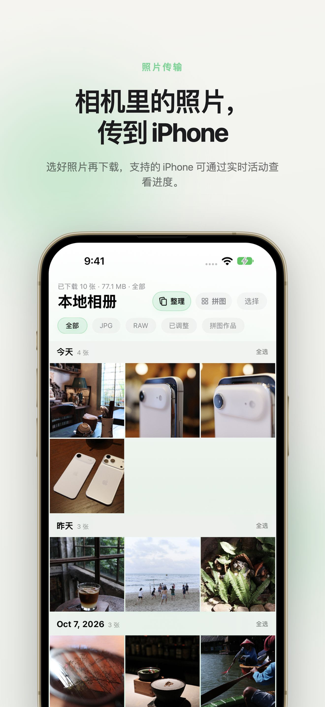
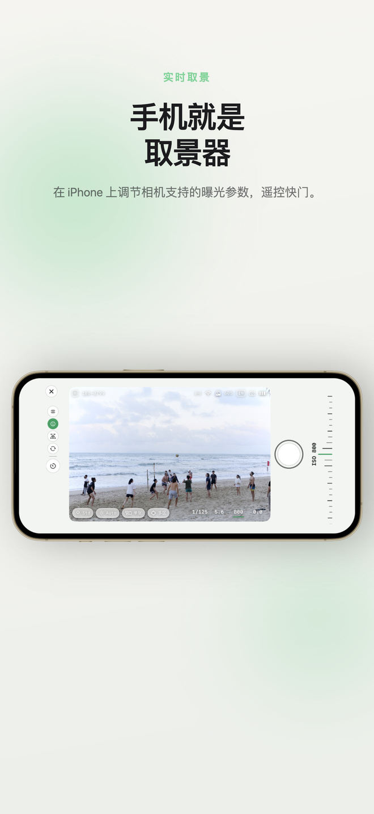
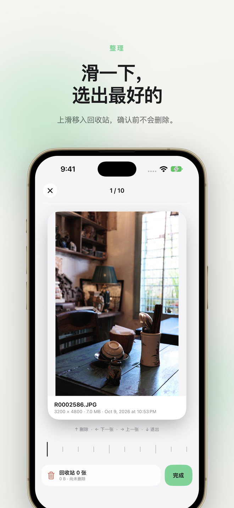
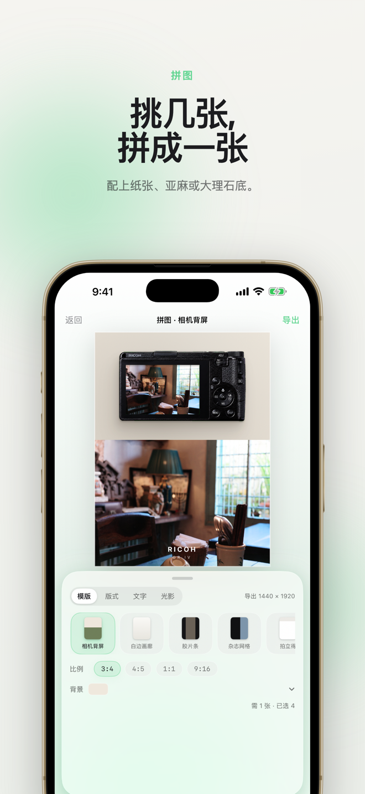
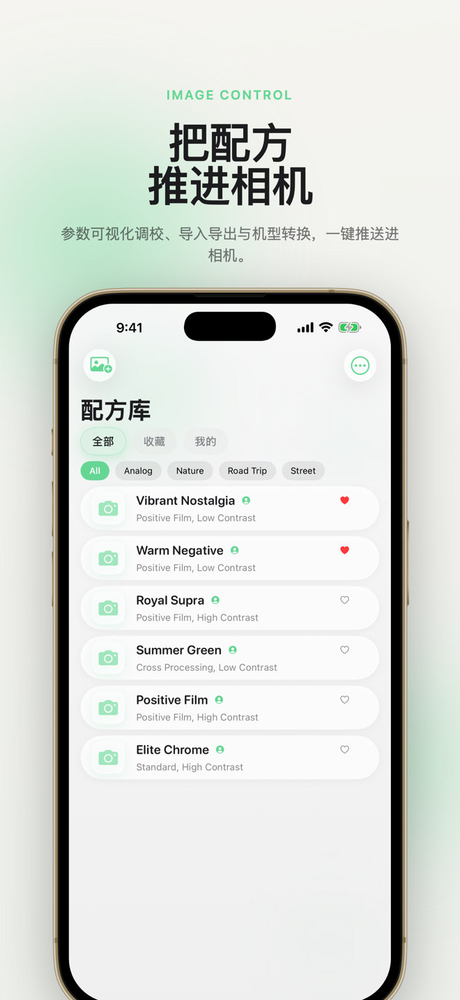
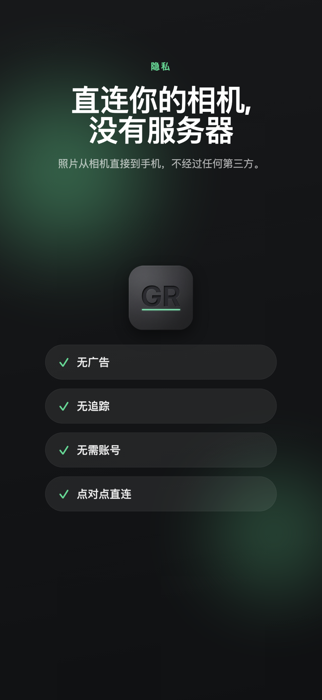

免费、独立开发的 Ricoh GR II、GR III、GR IIIx 与 GR IV 系列 iOS 伴侣应用。远程控制、实时取景、照片传输、配方等功能，尽在 iPhone。
想抢先体验新功能？ 加入 TestFlight 测试版 →

七张截图 · 一款应用 —— 从配对相机到隐私直连。







专为 Ricoh GR 摄影师设计的强大功能。
通过 WiFi 实时取景，在 iPhone 上控制快门、光圈、ISO 和曝光补偿。
浏览、预览并批量下载相机中的照片到 iPhone。
从照片导入、存储和管理自定义图像配方，轻松整理你的 GR 风格。
通过蓝牙低功耗无线拍照 — 无需 WiFi 连接。
管理 GR II、GR III、GR IIIx 和 GR IV 系列的多台相机，并按机型显示可用功能。
GR Link 支持 GR II、GR III、GR III HDF、GR IIIx、GR IIIx HDF、GR IV、GR IV HDF 和 GR IV Monochrome。不同相机及固件提供的能力并不完全相同。
查看相机兼容性说明 →GR Link 已在全球 App Store 上架，包括中国大陆。想第一时间用上新功能？加入 TestFlight 测试版。
抢先体验 —— 第一时间用上新功能
在新功能上架 App Store 之前抢先试用。测试版通过 Apple 官方 TestFlight 安装，稳定性可能不及正式版。
加入 TestFlight 测试需要 iOS 17.2 或更高版本。免费。